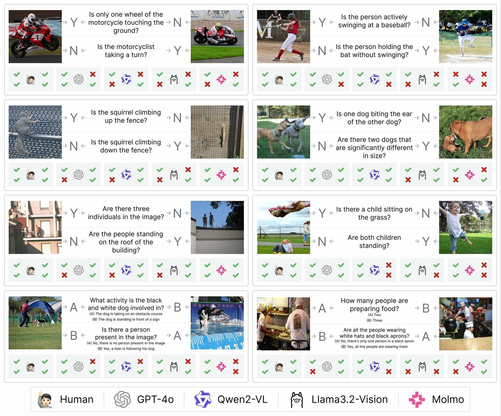
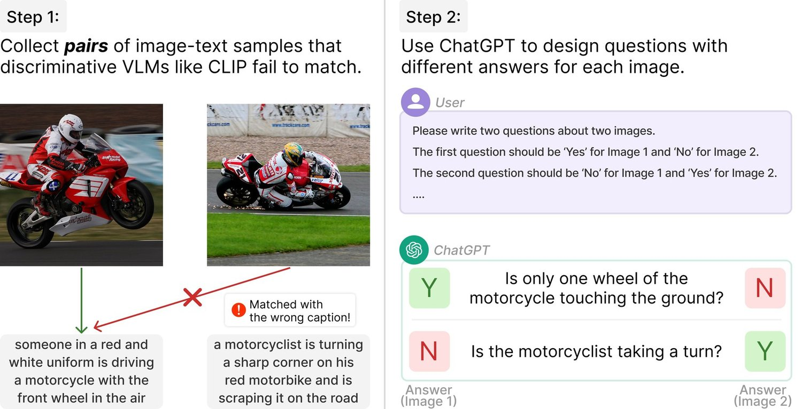
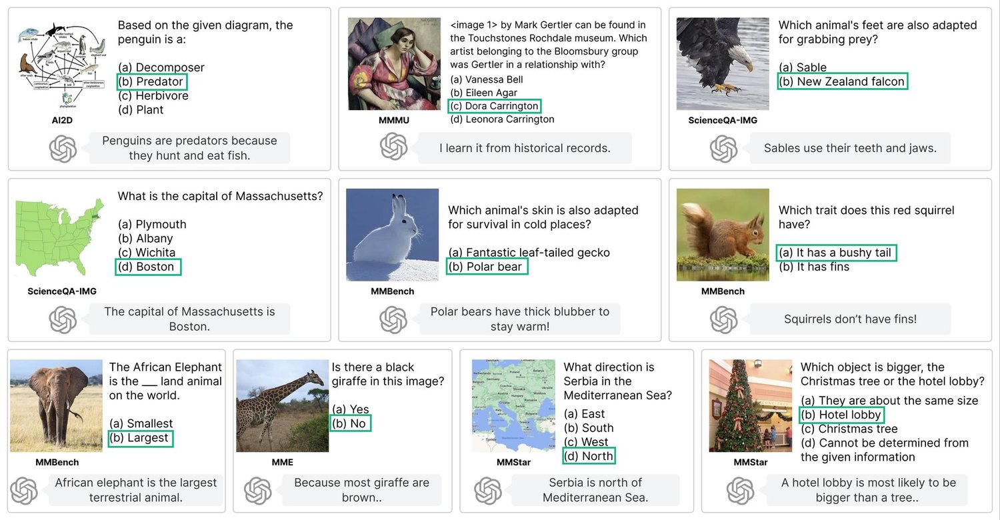
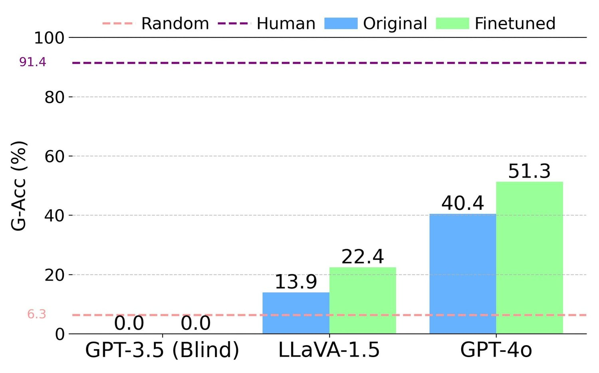
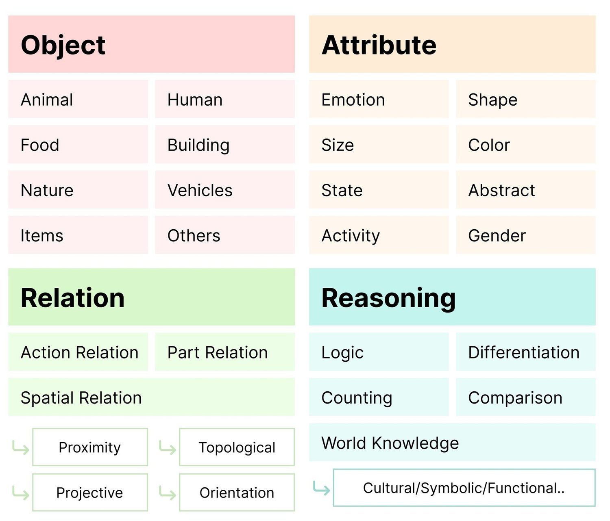
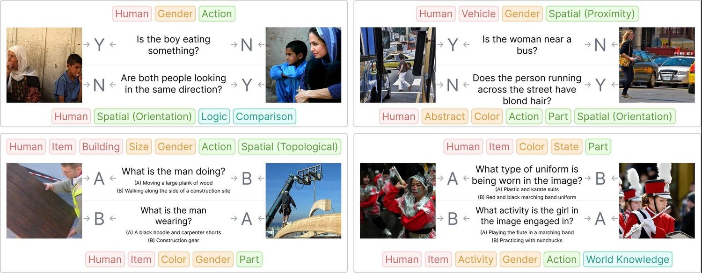
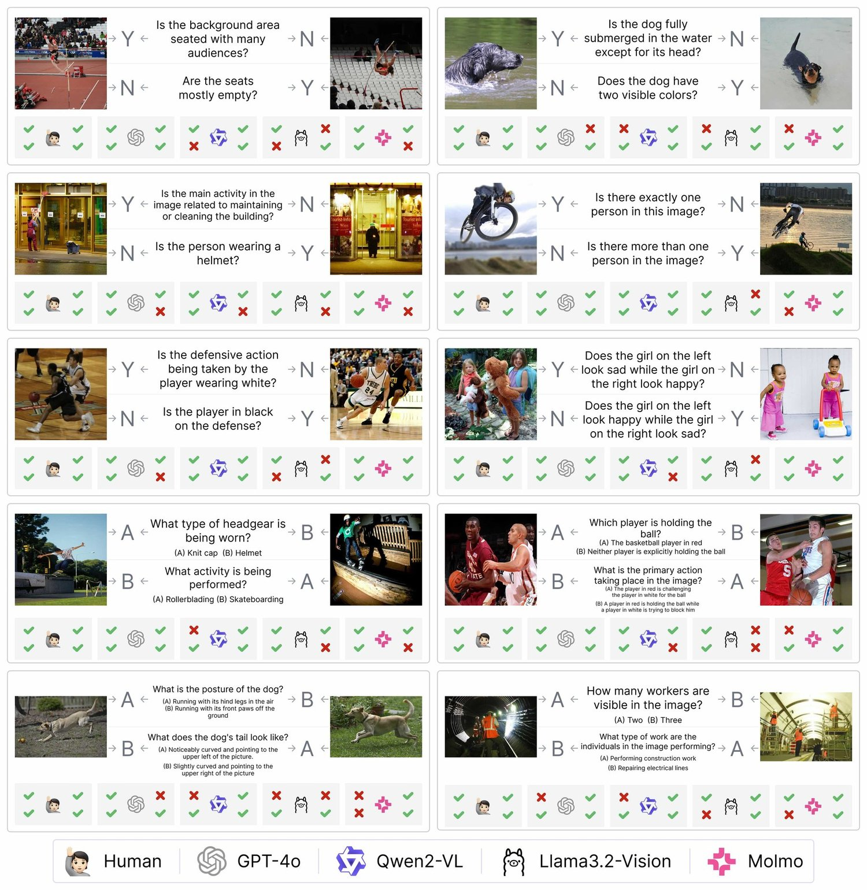
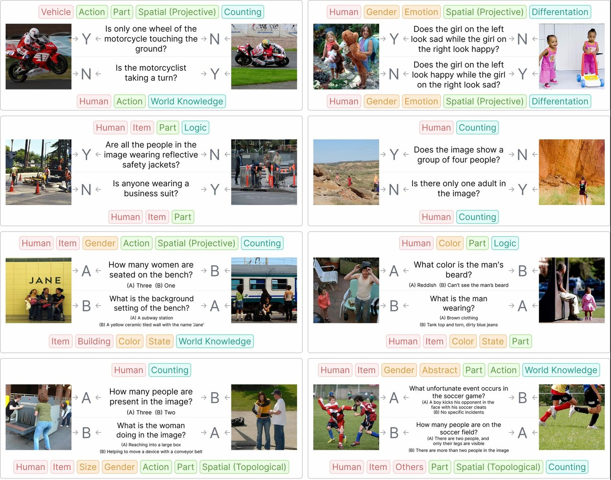

NaturalBench: Evaluating Vision-Language Models on Natural Adversarial Samples
Vision-language models (VLMs) have made significant progress in recent visual-question-answering (VQA) benchmarks that evaluate complex visio-linguistic reasoning. However, are these models truly effective? In this work, we show that VLMs still struggle with natural images and questions that humans can easily answer, which we term natural adversarial samples. We also find it surprisingly easy to generate these VQA samples from natural image-text corpora using off-the-shelf models like CLIP and ChatGPT. We propose a semi-automated approach to collect a new benchmark, NaturalBench, for reliably evaluating VLMs with 10,000 human-verified VQA samples. Crucially, we adopt a vision-centric design by pairing each question with two images that yield different answers, preventing “blind” solutions from answering without using the images. This makes NaturalBench more challenging than previous benchmarks that can largely be solved with language priors like commonsense knowledge. We evaluate 55 state-of-the-art VLMs on NaturalBench, showing that models like BLIP-3, LLaVA-OneVision, Cambrian-1, InternLM-XC2, Llama3.2-Vision, Molmo, Qwen2-VL, and even the (closed-source) GPT-4o lag 50%-70% behind human performance (which is above 90%). We analyze why NaturalBench is hard from two angles: (1) Compositionality: Solving NaturalBench requires diverse visio-linguistic skills, including understanding attribute bindings, object relationships, and advanced reasoning like logic and counting. To this end, unlike prior work that uses a single tag per sample, we tag each NaturalBench sample with 1 to 8 skill tags for fine-grained evaluation. (2) Biases: NaturalBench exposes severe biases in VLMs, as models often choose the same answer regardless of the image. We show that debiasing can be crucial for VLM performance. Lastly, we apply our benchmark curation method to diverse data sources, including long captions (over 100 words) and non-English languages like Chinese and Hindi, highlighting its potential for dynamic evaluations of VLMs.
Recent vision-language models (VLMs) such as OpenAI o3 [63], GPT-4o [62], Gemini 2.5 [21], BLIP-3 (XGen-MM) [81], LLaVA-OneVision [38], InternLM-XC2 [14], Llama3.2-Vision [17], Molmo [10] and Qwen2-VL [78] have markedly improved performance on challenging visual-question-answering (VQA) benchmarks like MMMU [85] and MME [18]. These benchmarks evaluate VLMs across various domains, such as college-level subjects [85, 54], commonsense reasoning [18, 35], diagram comprehension [31, 53], and complex problem-solving in mathematics, coding, physics, and temporal forecasting [55, 18, 51]. Despite their progress, our research identifies a significant gap: these models still struggle with seemingly simple questions about natural images. Figure 1 shows such VQA samples that humans find easy to solve, while even the state-of-the-art models fail. We term these natural adversarial samples [25] for VLMs.
近期的视觉语言模型（VLM），如 OpenAI o3 [63]、GPT-4o [62]、Gemini 2.5 [21]、BLIP-3（XGen-MM）[81]、LLaVA-OneVision [38]、InternLM-XC2 [14]、Llama3.2-Vision [17]、Molmo [10] 与 Qwen2-VL [78]，在 MMMU [85]、MME [18] 等富有挑战的视觉问答（VQA）基准上显著提升了性能。这些基准在多个领域评测 VLM，如大学层级的学科 [85, 54]、常识推理 [18, 35]、图表理解 [31, 53]，以及数学、编程、物理与时序预测中的复杂问题求解 [55, 18, 51]。尽管取得了这些进展，我们的研究发现一个显著缺口：这些模型在关于自然图像的、看似简单的问题上仍然吃力。图 1 给出了这样一类 VQA 样本——人类觉得容易，而即便当前最优的模型也会答错。我们把它们称为 VLM 的自然对抗样本 [25]。

图 1：NaturalBench 的示例由两个问题与两张图像组成，答案交替出现，以防「盲」模型取得高分（例如那些不管图像或问题如何、都预测同一答案的模型，见第 3 节）。我们把每个（图像，问题）对的真值答案与领先 VLM 的预测做比较，包括 GPT-4o（gpt-4o-2024-08-06）、Qwen2-VL（72B）、Llama3.2-Vision（90B）与 Molmo（72B）（见第 4 节）。即便像 GPT-4o 这样的最佳模型，也远远落后于人类表现（后者在 90% 以上）。图 2 展示了收集这些自然对抗样本的流水线。

图 2：收集 NaturalBench。我们用半自动流程从 Flickr30K [65] 等自然图文语料中收集 NaturalBench。首先，我们找出会让 CLIP [67]、BLIP-2 [40] 等判别式 VLM 失效的混淆图文样本对，例如它们把一张图像错配到另一张图像的说明文字上。接着，我们提示 ChatGPT 设计在两张图像上答案不同的问题，并在提示中提供原始说明文字。第 3 节详述这一流程。我们雇用人工标注者剔除不正确的 VQA 样本，例如「这位摩托车手穿着红白相间的制服吗？」——该问题对两张图像的答案都是「是」。与先前的对抗性基准 [41, 70, 25, 20] 不同，NaturalBench 既不针对任何特定的 VQA 模型，也不扰动图像或问题。第 6 节把这一简单流程扩展到多样化的数据源（例如非英语语料），以凸显其在 VLM 未来动态评测 [32] 中的潜力。
Collecting natural adversarial samples. In contrast to previous benchmarks that challenge VLMs with carefully-curated VQA samples [18, 51, 75, 5], we propose a semi-automated method to minimize human efforts by generating VQA samples from existing natural image-text datasets [65, 43] (see Figure 2). First, we identify pairs of image-text samples that leading VLMs like CLIP [67] fail to match correctly; typically, these pairs are visually and semantically similar. After collecting these confounding pairs, we send both samples to ChatGPT [61] to generate questions that elicit different answers for the two images. We hire human annotators to remove incorrect or irrelevant question-answer (QA) pairs by examining their corresponding images. This process is notably simpler than previous adversarial VQA benchmarks [41, 70] that train annotators to write new QA pairs that fail a targeted VQA model. Nonetheless, our VQA samples pose a “natural” challenge to state-of-the-art models without specifically targeting any.
收集自然对抗样本。此前的基准用精心整理的 VQA 样本来挑战 VLM [18, 51, 75, 5]，与之不同，我们提出一种半自动方法：从已有的自然图文数据集 [65, 43] 生成 VQA 样本，从而把人力投入降到最低（见图 2）。首先，我们找出像 CLIP [67] 这样的领先 VLM 无法正确匹配的图文样本对；这类样本对通常在视觉与语义上都相似。收集到这些混淆样本对之后，我们把两个样本一并送给 ChatGPT [61]，生成在两张图像上引发不同答案的问题。我们雇用人工标注者，通过查看对应图像来剔除错误或不相关的问答（QA）对。这一过程明显比先前的对抗性 VQA 基准 [41, 70] 简单——后者要培训标注者写出能让某个目标 VQA 模型失效的新 QA 对。尽管如此，我们的 VQA 样本在不专门针对任何模型的前提下，仍对当前最优模型构成了「自然」的挑战。
Avoiding “blind” solutions. Crucially, pairing each question with two images that yield different answers enforces VLMs to rely on the visual inputs. This approach contrasts with earlier benchmarks that can be (partially) addressed by blind language models [46, 5] that do not look at images. Indeed, we demonstrate that a suite of six popular VQA benchmarks [85, 18, 5, 51, 54, 31] can be largely addressed by a blind ChatGPT that exploits language biases. For instance, benchmarks like MME [18] contain questions like “Is there a black giraffe in the image?”, which can be answered using commonsense knowledge that most giraffes are brown. Additionally, these benchmarks may inadvertently capture an imbalanced answer distribution. For instance, in the MMStar benchmark [5] (which excludes questions solvable by blind LLMs like ChatGPT), “Yes” is three times more likely than “No” to be the correct answer for yes-or-no questions. Section 4 shows that such spurious answer patterns allow one to achieve performance gains by finetuning a blind GPT-3.5 solely on QA data from these VQA benchmarks. To prevent blind solutions from scoring well, we introduce a balanced evaluation protocol: each test sample contains two images and two questions, with answers alternating between different questions or images. Consequently, blind solutions that choose the same answers regardless of the questions or images will not succeed under this protocol.
避免「盲」解法。关键在于，把每个问题与两张答案不同的图像配对，会迫使 VLM 依赖视觉输入。这与早期那些可被（部分）盲语言模型 [46, 5]——即不看图像的模型——应付的基准形成对照。事实上，我们证明了六个流行的 VQA 基准 [85, 18, 5, 51, 54, 31] 中有相当一部分可以被一个利用语言偏置的盲 ChatGPT 解决。例如，MME [18] 这类基准包含「图像中有一只黑色的长颈鹿吗？」这样的问题，借助「多数长颈鹿是棕色的」这一常识就能作答。此外，这些基准还可能无意中引入了不均衡的答案分布。例如，在 MMStar 基准 [5]（它已排除盲 LLM 如 ChatGPT 可解的问题）中，是非题的正确答案里「是」出现的概率是「否」的三倍。第 4 节表明，这类虚假的答案模式足以让人仅在这些 VQA 基准的 QA 数据上微调一个盲 GPT-3.5 就获得性能提升。为防止盲解法取得高分，我们引入一种均衡的评测协议：每个测试样本包含两张图像与两个问题，答案在不同问题或不同图像之间交替。因此，无论问题或图像如何都选择相同答案的盲解法，在这一协议下无法奏效。
NaturalBench. We collect an initial benchmark with 5,800 yes-or-no and 1,800 multiple-choice VQA samples using public image-text datasets [65, 60], surpassing the scale of recent benchmarks like MMVP [75] and MMStar [5] (ranging from 300 to 1,500 samples). We hire a separate group of humans to evaluate themselves on NaturalBench tasks, achieving a high accuracy above 90%. We also evaluate over 50 open-source and closed-source VLMs. Popular models like LLaVA [49] and mPLUG-Owl [82] perform only marginally better than random chance, and even the best closed-source models such as GPT-4o and GPT-4Vision [61] lag significantly lag behind humans by more than 50%. This suggests that NaturalBench would serve as an effective testbed for driving future innovation in VLMs.
NaturalBench。我们利用公开的图文数据集 [65, 60] 收集了一个初始基准，含 5,800 个是非题与 1,800 个选择题 VQA 样本，规模超过 MMVP [75]、MMStar [5] 等近期基准（后两者在 300 到 1,500 个样本之间）。我们另雇一组人在 NaturalBench 任务上做自我评测，取得了 90% 以上的高准确率。我们还评测了 50 多个开源与闭源 VLM。LLaVA [49]、mPLUG-Owl [82] 等流行模型仅略好于随机猜测，而即便 GPT-4o、GPT-4Vision [61] 这样的最佳闭源模型，也以超过 50% 的幅度显著落后于人类。这说明 NaturalBench 可以成为推动 VLM 未来创新的有效试验台。
What are the challenges? We analyze why NaturalBench is difficult from two perspectives: (1) Compositionality: Solving NaturalBench requires diverse visio-linguistic skills [73, 33, 27, 37], such as attribute bindings, spatial/action/part relations, and advanced reasoning including comparison and logic. While most benchmarks assign only one skill tag per sample, we tag each sample with all applicable skills from a carefully defined taxonomy of 27 skills. Even the closed-source GPT-4o still struggles with certain skills such as spatial orientation and comparison, for example, “Are the two people looking in the same direction?”. (2) Biases: NaturalBench reveals significant biases in VLMs, particularly their tendency to repeat the same answer across different images (or questions). Our analysis suggests debiasing is a promising way to ground VLMs and reduce hallucinations, with NaturalBench serving as a useful benchmark for bias mitigation [90].
挑战何在？我们从两个角度分析 NaturalBench 为何困难。（1）组合性：求解 NaturalBench 需要多样的视觉语言技能 [73, 33, 27, 37]，如属性绑定、空间／动作／部件关系，以及包含比较与逻辑在内的高级推理。多数基准为每个样本只标注一个技能标签，而我们依据一套精心定义的 27 项技能分类体系，为每个样本标注所有适用的技能。即便是闭源的 GPT-4o，在某些技能上仍然吃力，如空间朝向与比较，例如「这两个人是否朝同一个方向看？」（2）偏置：NaturalBench 揭示出 VLM 中显著的偏置，尤其是它们在不同图像（或不同问题）上重复给出同一答案的倾向。我们的分析表明，去偏置是让 VLM 落地于视觉、减少幻觉的一条可行途径，而 NaturalBench 可作为偏置缓解 [90] 的有用基准。
Dynamic evaluations. To keep pace with model development and prevent data leakage [5, 91, 80], vision-language benchmarks must be continuously updated. Our benchmark curation method seamlessly adapts to dynamic evaluations [32, 59] by incorporating new data sources. We expand NaturalBench with over thousands of VQA samples constructed from two recent image-text datasets: (1) DOCCI [60] with detailed captions over 100 words, and (2) XM3600 [71] with non-English captions in Chinese and Hindi. Together, our first release of NaturalBench includes 10,000 samples, presenting diverse challenges for next-generation VLMs. We hope our efforts will inspire further research into dynamic evaluations of VLMs.
动态评测。为跟上模型发展的步伐并防止数据泄漏 [5, 91, 80]，视觉语言基准必须持续更新。我们的基准整理方法可以无缝适配动态评测 [32, 59]——只需纳入新的数据源。我们用两个近期提出的图文数据集扩展了 NaturalBench：（1）DOCCI [60]，其描述文字细致且超过 100 词；（2）XM3600 [71]，带有中文与印地语的非英语描述。至此，NaturalBench 的首个发布版本共含 10,000 个样本，为下一代 VLM 呈现出多样的挑战。我们希望这些努力能激发更多关于 VLM 动态评测的研究。
Benchmarks for vision-language models. Recent VLMs are commonly tested with popular VQA benchmarks such as MMStar [5], MMMU [85], MME [18], ScienceQA [54], AI2D [31], MMBench [51], MM-Vet [84], Seed-Bench [35], and MMVP [75]. These benchmarks evaluate complex visio-linguistic skills, such as fine-grained perception, reasoning and cognition, commonsense knowledge, and problem-solving across different fields. However, constructing them requires substantial human effort, including designing skills for evaluation, sourcing relevant images, and training annotators to create question-answer pairs [22, 84, 51, 75, 70, 41].
面向视觉语言模型的基准。近期的 VLM 通常用 MMStar [5]、MMMU [85]、MME [18]、ScienceQA [54]、AI2D [31]、MMBench [51]、MM-Vet [84]、Seed-Bench [35] 与 MMVP [75] 等流行的 VQA 基准来测试。这些基准评测复杂的视觉语言技能，如细粒度感知、推理与认知、常识知识，以及跨领域的问题求解。然而构建它们需要大量人力，包括设计待评测的技能、搜集相关图像，以及培训标注者来制作问答对 [22, 84, 51, 75, 70, 41]。
Biases in vision-language benchmarks. Despite careful construction, vision-language benchmarks are prone to spurious statistical patterns [68, 22] exploitable by “blind” shortcut solutions. For example, in the classic VQAv1 benchmark [2], questions starting with “Do you see a…” are answered “Yes” 87% of the time. Such language biases allow “blind” QA models to answer correctly without viewing images. While the community spent years addressing these issues, recent benchmarks designed for foundational VLMs still repeat these flaws [46, 5]. For example, image-text retrieval benchmarks like ARO [86] contain nonsensical negative captions that can be easily ruled out by caption likelihood [46, 76] or grammar correctness [27]. Recent VQA benchmarks like MMBench [51] are compromised by questions that can be solved using commonsense knowledge alone [5]. In this work, we show that even a blind ChatGPT can approach SOTA performance on these benchmarks, casting doubt on whether they truly assess visio-linguistic capabilities. As such, we design NaturalBench to avoid “blind” solutions by enforcing a balanced evaluation protocol [22, 73, 46].
视觉语言基准中的偏置。尽管构建细致，视觉语言基准仍容易出现可被「盲」捷径解法利用的虚假统计模式 [68, 22]。例如，在经典的 VQAv1 基准 [2] 中，以「你看到一只……吗？」开头的问题有 87% 的答案是「是」。这类语言偏置让「盲」QA 模型无需看图像就能答对。尽管学术界花了数年时间应对这些问题，近期为基座 VLM 设计的基准仍在重蹈覆辙 [46, 5]。例如，ARO [86] 等图文检索基准包含无意义的负样本文字，这些负样本仅凭描述似然 [46, 76] 或语法正确性 [27] 就能被轻易排除。MMBench [51] 等近期 VQA 基准则被「仅用常识知识即可解答」的问题所削弱 [5]。本工作表明，即便是一个盲 ChatGPT 也能在这些基准上接近 SOTA 性能，这让人怀疑它们是否真正在考察视觉语言能力。为此，我们通过强制实施均衡的评测协议 [22, 73, 46] 来设计 NaturalBench，以避免「盲」解法。
Adversarial samples for dynamic model evaluation. Historically, machine learning models took decades to reach human performance on static benchmarks – for example, 15 years for MNIST [12] and 7 years for ImageNet [11]. However, modern foundation models [67, 61, 39] often make new benchmarks obsolete in just months or years [32]. In response, recent research advocates for dynamic (lifelong) benchmarking protocols [58, 32, 72, 44]. The most popular approach is to collect adversarial data samples through a human-and-model-in-the-loop procedure. For instance, Adversarial NLI [59] and Dynabench [32] engage human annotators to continuously craft hard samples that fail existing large language models. Similarly, adversarial VQA benchmarks [41, 70] ask humans to repeatedly write difficult QA pairs for an image until one fails a VQA model. Hendrycks et al. [25] train annotators to find web images that confuse pre-trained ImageNet classifiers. In contrast, our data collection method does not target any specific models and requires only single-step verification by human annotators, making it more efficient for dynamic benchmark curation.
面向动态模型评测的对抗样本。历史上，机器学习模型要在静态基准上达到人类水平往往耗时数十年——例如 MNIST [12] 用了 15 年、ImageNet [11] 用了 7 年。然而现代基座模型 [67, 61, 39] 常常在数月或数年内就让新基准变得过时 [32]。作为回应，近期研究倡导动态（终身）基准评测协议 [58, 32, 72, 44]。最流行的做法是通过「人在环路 + 模型在环路」的流程收集对抗性数据样本。例如，Adversarial NLI [59] 与 Dynabench [32] 让人工标注者持续打造能让现有大语言模型失效的困难样本。类似地，对抗性 VQA 基准 [41, 70] 要求人工反复为一张图像编写困难的 QA 对，直到有某个 QA 对让 VQA 模型失效。Hendrycks 等人 [25] 训练标注者去网上寻找会混淆预训练 ImageNet 分类器的图像。与之不同，我们的数据收集方法不针对任何特定模型，且只需标注者做单步验证，因此在动态基准整理上更为高效。
This section describes how we collect NaturalBench.
本节介绍我们如何收集 NaturalBench。
Natural adversarial samples for VLMs. For discriminative tasks like visual recognition, adversarial samples are images that models misclassify [20, 25]. For generative VLMs trained on tasks like VQA, we define their adversarial samples as image-question pairs that humans can easily answer but models cannot. Existing work often maliciously perturbs input images or prompts to compromise VLMs [20, 66, 56, 16, 50, 28]; instead, we challenge VLMs using natural image-question pairs.
面向 VLM 的自然对抗样本。对视觉识别等判别式任务而言，对抗样本是那些被模型误分类的图像 [20, 25]。对在 VQA 等任务上训练的生成式 VLM，我们把它们的对抗样本定义为「人类能轻易回答、而模型不能」的图像—问题对。已有工作常常恶意扰动输入图像或提示来攻破 VLM [20, 66, 56, 16, 50, 28]；我们则用自然的图像—问题对来挑战 VLM。
Challenges in designing VQA benchmarks. Without careful curation, VQA benchmarks may be solved by blind QA models that ignore the images [22, 5]. First, Figure 3 shows that recent benchmarks often include questions solvable through commonsense knowledge. For example, MMBench [51] includes questions like, “Is the African Elephant the smallest or largest land animal?” which can be easily answered without seeing the image. Another question from MMMU [85] asks, “Which artist belonging to the Bloomsbury group was Gertler in a relationship with?” The correct answer is “Dora Carrington”, as the other options like “Vanessa Bell” and “Leonora Carrington” can be ruled out with knowledge of art history. We also refer interested readers to the concurrent work [5] for further discussion on this issue. Another easily overlooked bias is imbalanced answers. For example, in the popular MME [18] benchmark, the question “Does this artwork exist in the form of a painting?” is answered “Yes” 97.5% of the time, while “Does this artwork exist in the form of furniture?” is answered “No” 100% of the time. Even the concurrent MMStar [5] benchmark is not exempt from this issue, despite efforts to filter out samples from existing benchmarks that can be answered by blind language models. When MMStar asks about human emotions, “Sad” is three times more likely to be correct than “Happy”. In MMStar’s color-related questions, “White” and “Black” are up to ten times more likely to be correct than colors like “Purple”. Section 4 shows that such spurious answer patterns can be exploited by finetuning a “blind” ChatGPT.
设计 VQA 基准的挑战。若不精心整理，VQA 基准可能被忽略图像的盲 QA 模型解决 [22, 5]。首先，图 3 显示近期基准常包含可凭常识知识解答的问题。例如 MMBench [51] 包含「非洲象是最小的还是最大的陆生动物？」这样的问题，无需看图像就能轻松作答。MMMU [85] 中的另一道题问：「 belonging to the Bloomsbury group 的艺术家中，Gertler 与谁有过恋情？」正确答案是「Dora Carrington」，而「Vanessa Bell」「Leonora Carrington」等其他选项凭艺术史知识就能排除。我们也请感兴趣的读者参阅同期工作 [5] 对此问题的进一步讨论。另一类容易被忽视的偏置是答案不均衡。例如，在流行的 MME [18] 基准中，「这件艺术品是以绘画形式存在的吗？」有 97.5% 的答案是「是」，而「这件艺术品是以家具形式存在的吗？」则有 100% 的答案是「否」。即便是同期的 MMStar [5] 基准也未能免于此问题——尽管它已努力滤除那些可被盲语言模型回答的样本。当 MMStar 询问人类情绪时，「悲伤」是正确的概率是「快乐」的三倍；在 MMStar 与颜色相关的问题中，「白色」与「黑色」是正确的概率可达「紫色」等颜色的十倍。第 4 节表明，这类虚假的答案模式可以被一个微调后的「盲」ChatGPT 所利用。

图 3：先前基准中可凭常识知识解答的示例问题。我们给出来自现有 VQA 基准、可凭常识知识作答的示例问题。对这些问题，一个「盲」语言模型（如不带视觉输入的 ChatGPT）无需看图像就能作答。
Answer balancing (prior art). To avoid blind solutions, a VQA benchmark must ensure that all candidate answers to a question are equally likely. However, balancing answer distribution is challenging. For example, GQA [29] performs post-hoc balancing by discarding over 90% of collected VQA samples. VQAv2 [22] uses a labor-intensive procedure to fix imbalances in VQAv1: for each (image, question, answer) triplet, MTurk annotators review up to 24 similar images (searched via nearest neighbor search) to find an alternative that leads to a different answer.
答案均衡（已有工作）。为避免盲解法，VQA 基准必须确保一个问题的所有候选答案出现的可能性相同。然而均衡答案分布并不容易。例如，GQA [29] 采用事后均衡，丢弃了收集到的 90% 以上的 VQA 样本。VQAv2 [22] 则用一套劳动密集的流程来修正 VQAv1 的不均衡：对每个（图像，问题，答案）三元组，MTurk 标注者要审阅多达 24 张相似图像（通过最近邻检索得到），以找出会导致不同答案的替代图像。
Efficient construction of balanced VQA samples (ours). We posit that foundation models [67, 61] can significantly reduce the human effort required to create balanced VQA benchmarks. Specifically, we automate the two most labor-intensive tasks: (1) finding pairs of similar images [22], and (2) generating corresponding questions and answers [41]. Given an image-text dataset like Flickr30K [65], our data curation pipeline (Figure 2) operates as follows. Step 1: We search for pairs of image-text samples that are incorrectly matched by discriminative VLMs like CLIP, meaning they erroneously match an image with another image’s caption. Step 2: We use generative LLMs like ChatGPT to write questions that yield different answers for each image. We elaborate on this process below:
高效构造均衡 VQA 样本（本工作）。我们认为，基座模型 [67, 61] 可以大幅减少创建均衡 VQA 基准所需的人力。具体地，我们把两项最费人力的任务自动化：（1）寻找相似图像对 [22]；（2）生成相应的问题与答案 [41]。给定一个图文数据集（如 Flickr30K [65]），我们的数据整理流水线（图 2）如下运作。第 1 步：搜索会被 CLIP 等判别式 VLM 错配的图文样本对，即它们错误地把一张图像与另一张图像的说明文字相匹配。第 2 步：用 ChatGPT 等生成式 LLM 撰写在两张图像上答案不同的问题。下面详述这一过程：
Step 1: Collecting pairs of image-text samples. We denote an image by and a text caption by . VLMs like CLIP [67] compute a similarity score , with higher scores indicating greater similarity. For a pair of image-text samples , a correct match occurs when and are both greater than and . Conversely, a mismatch occurs when:
第 1 步：收集图文样本对。我们用 表示图像，用 表示文本描述。CLIP [67] 等 VLM 计算相似度分数 ，分数越高表示越相似。对一对图文样本 ，当 与 都大于 与 时发生正确匹配。反之，当满足以下条件时发生错配：
| (1) |
Our Appendix shows that this adversarial procedure pairs visually and semantically similar images more efficiently than other methods (e.g., random pairing) for creating challenging VQA samples. Using Flickr30K [65], we identify all mismatches of both CLIP (ViT-L-14-LAION400m) [30] and BLIP-2 [40]. Since each sample can mismatch with multiple others, we randomly keep one mismatch per sample to collect about 2,000 unique pairs. We also hire annotators to discard around 800 pairs where a caption can describe both images. Our Appendix shows that these pairs already form an image-text retrieval benchmark in the same format as Winoground [73], challenging even the latest SigLIP [87] models trained with more parameters and data [69].
我们的附录表明，在构造有挑战性的 VQA 样本时，这一对抗式流程比其他方法（如随机配对）更高效地配出视觉与语义上都相似的图像。借助 Flickr30K [65]，我们找出 CLIP（ViT-L-14-LAION400m）[30] 与 BLIP-2 [40] 的全部错配。由于每个样本可能与多个其他样本错配，我们为每个样本随机保留一个错配，从而收集到约 2,000 个不重复的图像对。我们还雇用标注者丢弃了约 800 个「同一句描述可以同时描述两张图像」的图像对。我们的附录显示，这些图像对已经构成一个与 Winoground [73] 相同格式的图文检索基准，即便对用更多参数与数据训练的 SigLIP [87] 等最新模型也具有挑战性。
Step 2: Generating questions and answers. We ask ChatGPT to generate questions that yield different answers for two images. For example, given the caption pair and , ChatGPT can generate questions answered “Yes” for one image and “No” for the other using the below instruction:
第 2 步：生成问题与答案。我们让 ChatGPT 生成在两张图像上答案不同的问题。例如，给定描述文字对 与 ，ChatGPT 可以用下面的指令生成在一张图像上答案为「是」、在另一张上为「否」的问题：
Our Appendix shows how to modify this prompt for other question types (e.g., multiple-choice). For each generated VQA sample (a triplet of image, question, and answer), we engage two human annotators to select from the two candidate answers and “Unanswerable” [23]. We retain a sample only if both annotators agree on the correct answer. This step is crucial to ensure the quality of our benchmark. For samples that annotators fail or disagree on, we will resample new questions using ChatGPT up to three times. Using 1,200 Flickr30K image pairs, we manage to collect 2,600 yes-or-no and 1,000 multiple-choice VQA samples. Section 6 shows how NaturalBench can be easily expanded with new data, as we add 3,200 yes-or-no and 800 multiple-choice VQA samples collected from DOCCI. In the main paper, we present results on the combined dataset of 7,600 English VQA samples collected from Flickr30K [65] and DOCCI [60].
我们的附录展示如何修改该提示以生成其他题型（如选择题）。对每个生成的 VQA 样本（图像、问题、答案的三元组），我们请两名人工标注者从两个候选答案与「无法回答」[23] 中做出选择，只有当两名标注者就正确答案达成一致时才保留该样本。这一步对保证基准质量至关重要。对标注者无法作答或意见不一致的样本，我们会用 ChatGPT 重新采样新的问题，最多三次。借助 1,200 个 Flickr30K 图像对，我们收集到 2,600 个是非题与 1,000 个选择题 VQA 样本。第 6 节说明 NaturalBench 如何轻易地用新数据扩展——我们从 DOCCI 又收集了 3,200 个是非题与 800 个选择题样本。在正文中，我们报告从 Flickr30K [65] 与 DOCCI [60] 收集、合计 7,600 个英文 VQA 样本的合并数据集上的结果。
图 4：GPT-3.5 与 LLaVA-1.5 在既有 VQA 基准上的性能。我们把每个基准均分为训练集与测试集，并报告零样本（蓝色）与微调后（绿色）的结果。既有基准表现出很强的语言偏置，使得盲 GPT-3.5 可以通过在无图像的 QA 数据上微调来利用虚假的答案模式（见第 4 节）。结果，盲 GPT-3.5 大幅超过随机猜测性能（见红色虚线），有时甚至与使用图像微调的 LLaVA-1.5-7B 持平。相比之下，图 5 显示 NaturalBench 能有效阻止盲解法超过随机水平。
 |
| NaturalBench-Test (G-Acc) |
图 5：GPT-3.5、LLaVA-1.5 与 GPT-4o 在 NaturalBench 上的性能。我们也把 NaturalBench（英文子集）均分为训练集与测试集，并报告零样本（蓝色）与微调后（绿色）的结果。我们报告分组准确率（G-Acc）——其定义见第 4 节，即四个（图像，问题）对全部答对才得分。我们强调几项关键结果：（1）盲 GPT-3.5 无论是否微调，都无法超过随机猜测性能（红色虚线）。（2）通过在 NaturalBench 的训练图像上微调，LLaVA-1.5 提升了 。（3）即便 GPT-4o，通过在 NaturalBench 上做视觉微调也能获得 的 G-Acc 增益；但它仍远远落后于人类表现（紫色虚线）。这些发现证实了 NaturalBench 是一个更以视觉为中心的基准，也是一个有望用于改进已有先进 VLM 的数据集。
We present model results to contrast NaturalBench with previous benchmarks.
我们给出模型结果，以对照 NaturalBench 与既有基准。
NaturalBench is more robust against blind solutions. Popular VQA benchmarks like MME [18] inadvertently encourage “blind” models that exploit language biases. We show this by using a random half of each benchmark for training and testing on the other half. We finetune a blind LLM (GPT-3.5) using auto (default) hyperparameters, while LLaVA-1.5 is finetuned with a learning rate of 2e-5 and a batch size of 16. Both models are trained for 10 epochs. Figure 4 shows that GPT-3.5 finetuned using only QA data (without images) significantly outperforms random chance and sometimes even matches the performance of LLaVA-1.5 finetuned with images. In contrast, NaturalBench enforces a balanced answer distribution for each question and image. Figure 5 confirms that NaturalBench’s design prevents blind GPT-3.5 from exceeding random chance performance, establishing it as a more vision-centric benchmark for reliable VLM evaluation. Additionally, vision finetuning of LLaVA-1.5 and GPT-4o 11 1 Due to the high cost, we only finetune GPT-4o on NaturalBench, not other benchmarks. We use the ‘auto’ setting for vision finetuning of GPT-4o. significantly boosts their performance over the original checkpoints, suggesting that NaturalBench is a potentially useful dataset for improving future VLMs. In this paper, we focus on model evaluation and leave data scaling for training to future work. We now proceed to evaluate more models on NaturalBench.
NaturalBench 对盲解法更稳健。MME [18] 等流行的 VQA 基准无意中鼓励了利用语言偏置的「盲」模型。我们这样展示该现象：用每个基准随机的一半做训练，在另一半上测试。我们用一个盲 LLM（GPT-3.5）以自动（默认）超参数微调，而 LLaVA-1.5 以 2e-5 的学习率、16 的批大小微调，两个模型都训练 10 个 epoch。图 4 显示，仅用 QA 数据（无图像）微调的 GPT-3.5 显著优于随机猜测，有时甚至与使用图像微调的 LLaVA-1.5 持平。相比之下，NaturalBench 对每个问题与每张图像都强制了均衡的答案分布。图 5 证实，NaturalBench 的设计能阻止盲 GPT-3.5 超过随机猜测性能，从而确立其作为可靠 VLM 评测基准的、更以视觉为中心的地位。此外，对 LLaVA-1.5 与 GPT-4o 做视觉微调 11 1 由于成本高昂，我们只在 NaturalBench 上微调 GPT-4o，而不在其他基准上微调。对 GPT-4o 的视觉微调采用「auto」设置。 ，其性能相对原始检查点大幅提升，说明 NaturalBench 有望成为改进未来 VLM 的有用数据集。本文聚焦模型评测，把训练用的数据扩展留给未来工作。下面我们继续在 NaturalBench 上评测更多模型。
表 1：在 NaturalBench 上的性能。我们报告 55 个领先 VLM 在 NaturalBench 上的性能。所有模型都显著落后于人类表现，人与模型之间的性能差距（以 G-Acc 计）以红色标出。最新的模型，如 BLIP-3（XGen-MM）、Cambrian-1、LLaVA-OneVision、Llama3.2-Vision、Molmo 与 Qwen2-VL，以 55% 到 70% 的幅度显著落后于人类。即便是最佳的闭源模型 OpenAI o3，也仍落后人类 30%。
| \rectanglecolorsoftgray6-17-8 \rectanglecolorsoftgray12-112-8 \rectanglecolorsoftgray14-114-8 \rectanglecolorsoftgray16-117-8 \rectanglecolorsoftgray20-120-8 \rectanglecolorsoftgray22-122-8 \rectanglecolorsoftgray24-124-8 \rectanglecolorsoftgray26-126-8 \rectanglecolorsoftgray28-128-8 \rectanglecolorsoftgray33-133-8 \rectanglecolorsoftgray35-135-8 \rectanglecolorsoftgray37-137-8 \rectanglecolorsoftgray39-141-8 \rectanglecolorsoftgray43-143-8 \rectanglecolorsoftgray45-145-8 \rectanglecolorsoftgray48-149-8 \rectanglecolorsoftgray54-156-8 Model | Image Encoder | Language Model | NaturalBench Performance | ||||
| Acc | Q-Acc | I-Acc | G-Acc | ||||
| Human Performance | – | – | 97.5 | 94.6 | 95.0 | 92.1 | 0.0 |
| Random Chance | – | – | 50.0 | 25.0 | 25.0 | 6.3 | -85.8 |
| Open-source Models | |||||||
| BLIP-2 [40] | EVA-G | FlanT5-3B | 56.2 | 14.0 | 17.1 | 2.1 | -89.9 |
| FlanT5-11B | 61.0 | 25.8 | 31.9 | 7.7 | -84.4 | ||
| InstructBLIP [9] | EVA-G | Vicuna-7B | 59.1 | 20.2 | 24.2 | 4.0 | -88.1 |
| Vicuna-13B | 62.8 | 29.0 | 34.8 | 9.2 | -82.9 | ||
| FlanT5-3B | 62.5 | 35.2 | 28.1 | 9.8 | -82.3 | ||
| FlanT5-11B | 64.5 | 32.8 | 39.1 | 12.7 | -79.4 | ||
| Otter [34] | CLIP-L-14 | MPT-7B | 57.4 | 20.9 | 24.9 | 3.8 | -88.3 |
| LlaMA-Adapter-v2.1 [19] | CLIP-L-14 | LaMA2-7B | 58.3 | 19.4 | 23.2 | 4.4 | -87.7 |
| CogVLM-Agent-VQA [26] | EVA2-E | Vicuna-7B | 64.9 | 31.1 | 34.7 | 10.3 | -81.8 |
| DeepSeek-VL-1.3B-Chat [52] | SigLIP-L & SAM-B | DeepSeek-LLM-1B | 66.5 | 35.4 | 39.4 | 11.5 | -80.6 |
| ShareGPT4V [4] | CLIP-L-14 | Vicuna-7B | 68.4 | 39.1 | 44.3 | 12.5 | -79.6 |
| Vicuna-13B | 69.3 | 40.5 | 44.3 | 14.9 | -77.2 | ||
| LLaVA-1.5 [48] | CLIP-L-14 | Vicuna-7B | 67.3 | 37.7 | 43.8 | 12.7 | -79.4 |
| Vicuna-13B | 68.9 | 39.6 | 44.6 | 14.8 | -77.3 | ||
| CogVLM-Chat [79] | EVA2-E | Vicuna-7B | 68.1 | 37.7 | 41.3 | 13.9 | -78.2 |
| InternLM-XC-V1 [89] | EVA-G | InternLM-7B | 68.7 | 40.3 | 46.9 | 15.5 | -76.6 |
| InternLM-XC-V2-1.8B [15] | CLIP-L-14 | InternLM2-1.8B | 70.5 | 43.3 | 46.9 | 16.6 | -75.5 |
| Qwen-VL-Chat [3] | CLIP-G-16 | Qwen-7B | 70.0 | 42.6 | 46.8 | 17.1 | -75.0 |
| Phi-3-Vision [1] | CLIP-L-14 | Phi-3-Mini | 70.4 | 43.4 | 48.7 | 17.2 | -74.9 |
| mPLUG-Owl2 [83] | CLIP-L-14 | Llama2-7B | 70.4 | 43.7 | 48.7 | 17.4 | -74.7 |
| Bunny [24] | SigLIP-SO | Phi-2-2.7B | 69.9 | 42.3 | 48.4 | 17.4 | -74.7 |
| mPLUG-Owl2.1 [83] | CLIP-L-14 | Qwen-7B | 70.1 | 42.5 | 47.1 | 17.9 | -74.2 |
| Monkey-10B-chat [42] | OpenCLIP-BigG | Qwen-7B | 71.1 | 43.9 | 48.3 | 18.2 | -73.9 |
| LLaVA-NeXT [49] | CLIP-L-14 | Vicuna-7B | 70.2 | 42.5 | 47.6 | 15.0 | -77.1 |
| Mistral-7B | 71.1 | 44.6 | 49.1 | 16.3 | -75.8 | ||
| Vicuna-13B | 72.2 | 45.9 | 49.9 | 19.2 | -72.9 | ||
| Nous-Hermes-2-Yi-34B | 73.5 | 48.2 | 50.9 | 22.7 | -69.4 | ||
| DeepSeek-VL-7B-Chat [52] | SigLIP-L & SAM-B | DeepSeek-LLM-7B | 71.7 | 46.0 | 50.1 | 19.3 | -72.8 |
| BLIP-3 (XGen-MM) [81] | CLIP-H-14 | Phi-3-Mini | 72.3 | 47.0 | 51.2 | 19.5 | -72.6 |
| InternVL-Chat-V1.1 [6] | InternViT-6B | Llama2-13B | 73.4 | 48.5 | 52.3 | 20.3 | -71.8 |
| InternVL-Chat-V1.5 [7] | InternViT-6B | InternLM2-Chat-20B | 75.3 | 52.3 | 55.9 | 23.1 | -69.0 |
| InternVL-Chat-V1.2-Plus [6] | InternViT-6B | Nous-Hermes-2-Yi-34B | 75.5 | 52.7 | 56.2 | 23.4 | -68.7 |
| InternVL2-8B [8] | InternViT-300M | InternLM2.5-7B-Chat | 74.0 | 50.4 | 54.4 | 23.5 | -68.6 |
| Cambrian-1 [74] | SigLIP-S-14 & CLIP-L-14 DINOv2-g & CLIP-ConvNeXT-XXL | Llama-3-8B | 71.5 | 44.6 | 47.9 | 19.4 | -72.7 |
| Vicuna-13B | 75.4 | 52.6 | 55.7 | 25.5 | -66.6 | ||
| Nous-Hermes-2-Yi-34B | 76.3 | 53.9 | 57.2 | 26.6 | -65.5 | ||
| InternLM-XC2-4KHD-7B [13] | CLIP-L-14 | InternLM2-7B | 75.5 | 53.1 | 56.1 | 25.9 | -66.2 |
| InternLM-XC2-7B [15] | CLIP-L-14 | InternLM2-7B | 76.0 | 53.9 | 56.7 | 26.5 | -65.6 |
| InternVL-Chat-V1.2 [6] | InternViT-6B | Nous-Hermes-2-Yi-34B | 75.6 | 52.9 | 56.4 | 26.6 | -65.5 |
| InternVL2-26B [8] | InternViT-6B | InternLM2-Chat-20B | 76.9 | 55.4 | 58.4 | 27.7 | -64.4 |
| LLaVA-OneVision [38] | SigLIP-S-14 | Qwen2-0.5B | 68.7 | 39.8 | 46.2 | 15.6 | -76.5 |
| Qwen2-7B | 77.2 | 56.1 | 58.8 | 28.8 | -63.3 | ||
| Llama3.2-Vision [17] | ViT-H-14 | Llama-3.1-8B | 75.1 | 51.7 | 55.6 | 26.8 | -65.3 |
| Llama-3.1-70B | 77.0 | 55.1 | 57.5 | 29.1 | -63.0 | ||
| Molmo [10] | CLIP-L-14 | OLMoE-1B | 68.3 | 38.2 | 42.6 | 14.7 | -77.4 |
| OLMo-7B | 72.8 | 46.8 | 50.3 | 20.7 | -71.5 | ||
| Qwen2-7B | 75.3 | 52.0 | 55.8 | 26.7 | -65.4 | ||
| Qwen2-72B | 76.4 | 53.9 | 57.0 | 29.3 | -62.8 | ||
| Qwen2-VL [78] | NaViT-14 | Qwen2-1.5B | 74.1 | 50.8 | 54.4 | 23.4 | -68.7 |
| Qwen2-7B | 76.7 | 55.5 | 58.5 | 29.1 | -63.0 | ||
| Qwen2-72B | 79.9 | 61.3 | 64.0 | 36.9 | -55.2 | ||
| Closed-source Models | |||||||
| GPT-4Vision [61] | 75.0 | 52.5 | 56.1 | 26.2 | -65.9 | ||
| GPT-4o [62] | 81.6 | 64.4 | 66.4 | 39.6 | -52.5 | ||
| Gemini 2.5 Pro [21] | 83.2 | 67.5 | 68.8 | 47.3 | -44.8 | ||
| OpenAI o3 [63] | 86.1 | 73.4 | 75.0 | 55.1 | -37.0 | ||
Evaluation setup. To better understand model performance, we introduce three additional metrics. We define the “question accuracy” (Q-Acc) metric to award a point only if a model correctly answers a question for both images. Similarly, the “image accuracy” (I-Acc) metric awards a point when a model correctly answers both questions for an image. Lastly, the “group accuracy” (G-Acc) metric awards one point when a model correctly answers all four (image, question) pairs in a test sample. These VQA metrics are analogous to Winoground’s retrieval metrics [73] for paired (image, caption) samples. When reporting performance, we generate answers using each model’s default decoding strategy and compare them to the ground-truth answers. Alternatively, Section 5 shows that models can be evaluated deterministically by comparing the likelihood of each candidate answer using VQAScore [45].
评测设置。为更好地理解模型性能，我们引入三个额外指标。我们定义「问题准确率」（Q-Acc）：只有当模型对某问题在两张图像上都答对时才得分。类似地，「图像准确率」（I-Acc）：当模型对某张图像的两个问题都答对时得分。最后，「分组准确率」（G-Acc）：当一个测试样本中四个（图像，问题）对全部答对时得分。这些 VQA 指标与 Winoground 针对成对（图像，描述）样本的检索指标 [73] 相类比。报告性能时，我们用各模型默认的解码策略生成答案，再与真值答案比对。另外，第 5 节表明，也可以用 VQAScore [45] 比较各候选答案的似然，从而确定性地评测模型。
NaturalBench challenges all state-of-the-art VLMs. Table 1 shows that NaturalBench significantly challenges leading VLMs, with most models performing only 5% to 20% above random chance (in terms of G-Acc). Even models like InternLM-XC2-7B [15], despite being trained on Flickr30K images (but not our questions), perform only 20.2% better than chance. Closed-source models trained on proprietary datasets, such as GPT-4o and GPT-4v, still lag behind average human performance, as measured by a separate group of three human annotators. We also note that Q-Acc (correctly answering both images for each question) is always lower than I-Acc (correctly answering both questions for each image). This is primarily due to models choosing the same answer for a question regardless of the input image, which motivates our analysis in Section 5 on debiasing VLMs. Lastly, we observe that latest models like Qwen2-VL, Molmo, and Llama3.2 improve with larger language models. We now explore how NaturalBench identifies areas for future model improvement.
NaturalBench 对所有当前最优 VLM 都构成挑战。表 1 显示，NaturalBench 显著挑战了领先的 VLM，多数模型的表现仅比随机猜测高 5% 到 20%（以 G-Acc 计）。即便像 InternLM-XC2-7B [15] 这样（在 Flickr30K 图像上、但不在我们的问题上）训练过的模型，也只比随机水平高 20.2%。在专有数据集上训练的闭源模型，如 GPT-4o 与 GPT-4v，仍落后于由另一组三名人工标注者测得的平均人类表现。我们还注意到，Q-Acc（对每个问题在两张图像上都答对）始终低于 I-Acc（对每张图像的两个问题都答对）。这主要是因为模型不论输入哪张图像都对同一问题给出相同答案，这也引出了我们在第 5 节对 VLM 去偏置的分析。最后我们观察到，Qwen2-VL、Molmo、Llama3.2 等最新模型随语言模型规模增大而性能提升。下面我们来探讨 NaturalBench 如何指出未来模型的改进方向。
We analyze why NaturalBench is challenging from (1) compositionality and (2) biases.
我们从（1）组合性与（2）偏置两个角度分析 NaturalBench 为何困难。
NaturalBench assesses visio-linguistic compositional reasoning. Solving a NaturalBench sample often requires a combination of skills, including object recognition, attribute binding, relation understanding, and advanced reasoning such as logic, comparison, differentiation (instance discrimination), counting, and world knowledge. For fine-grained evaluation, we manually tag each (image, question) pair with all associated skills, unlike prior benchmarks that oversimplify by assigning a single skill tag per sample. Figure 6 showcases the skill taxonomy with 8 types of objects, 8 types of attributes, 3 types of relations (with spatial relation further divided into 4 subtypes [47]), and 5 types of reasoning [36]. This taxonomy is more compositional than previous benchmarks such as MMVP [75], which assigns each sample a single tag from 8 skill types. The Appendix provides detailed skill definitions, examples, and model performance for each skill. Several conclusions are noted: (1) Certain skills are generally harder than others; for example, abstract attributes (e.g., helpful) are harder than color or size attributes. Orientation (e.g., facing, towards) is harder than other spatial relations like proximity (e.g., near, far) or projectivity (e.g., to the right, on top of). (2) Even the strongest GPT-4o are challenged by advanced reasoning skills such as comparison (e.g., more than, the same as, happier).
NaturalBench 考察视觉语言的组合推理。求解一个 NaturalBench 样本往往需要多种技能的组合，包括物体识别、属性绑定、关系理解，以及逻辑、比较、区分（实例判别）、计数与世界知识等高级推理。为做细粒度评测，我们人工为每个（图像，问题）对标注所有相关技能，而不像先前基准那样简化为每样本一个技能标签。图 6 展示了这套技能分类体系：8 类物体、8 类属性、3 类关系（其中空间关系又细分为 4 个子类 [47]）与 5 类推理 [36]。该分类体系比 MMVP [75] 等先前基准更具组合性——后者为每个样本从 8 类技能中只指派一个标签。附录给出了各技能的详细定义、示例与模型性能。我们注意到几点结论：（1）某些技能总体上更难；例如抽象属性（如 helpful）比颜色或尺寸属性更难；朝向（如 facing、towards）比邻近（如 near、far）或投影（如 to the right、on top of）等其他空间关系更难。（2）即便最强的 GPT-4o，也在比较（如 more than、the same as、happier）等高级推理技能上受挫。
| (a) Skill taxonomy | (b) Examples of skill tags |
 |
 |
图 6：技能分类体系与标注。图（a）概述 NaturalBench 所评测的组合推理技能。各技能的定义与逐技能模型性能见我们的附录。图（b）给出 NaturalBench 样本及其关联的技能标签。与先前每样本只标一个标签的基准不同，NaturalBench 为每个样本标注所有适用的技能，以支持细粒度分析。
NaturalBench exposes significant model biases. We find that most VLMs underperform on NaturalBench due to biases towards certain answers, such as “Yes” for yes-or-no questions and “B” for multiple-choice questions. We posit that mitigating these biases can improve model performance. To show this, we adopt a scoring-based evaluation strategy using the generative likelihood of each candidate answer (VQAScore [45]) to determine the model’s predicted answer. Specifically, given a question , an image , and two candidate answers and , we evaluate:
NaturalBench 暴露出显著的模型偏置。我们发现多数 VLM 在 NaturalBench 上表现不佳，源于对某些答案的偏置，例如是非题偏向「是」、选择题偏向「B」。我们认为缓解这些偏置可以提升模型性能。为证明这一点，我们采用一种基于打分的评测策略：用每个候选答案的生成似然（VQAScore [45]）来确定模型的预测答案。具体地，给定一个问题 、一张图像 以及两个候选答案 与 ，我们评估：
| (2) |
where is a threshold (default is 0). If this condition (Eq. 2) is met, the model predicts ; otherwise, it predicts . The Appendix shows that deterministic evaluation yields results largely consistent with stochastic decoding while being more reproducible. Crucially, this formulation allows us to adjust for each NaturalBench sample (four image-question pairs) to avoid repeating the same answers across images (or questions). Recall that Q-Acc awards a point when the model correctly answers both images for a question. We can now calculate a debiased Q-Acc by adjusting so that the model predicts different answers for each image. Similarly, a debiased I-Acc is calculated by adjusting to ensure different predicted answers for each question (of the same image). For debiased G-Acc, we tune to make the model predict for two of the four image-question pairs and for the other two pairs. Table 2 shows that these metrics significantly outperform the original ones by 35% to 40%, indicating that proper debiasing of the model can lead to notable performance gains. Importantly, our debiased metrics reflect the ability of a VLM to correctly rank the set of eight image-question-answer triples, such that the correct combinations are more probable than incorrect ones. However, this protocol violates the original task of answering a single image-question pair. This motivates us to study alternate debiasing techniques [90] in the Appendix. We believe NaturalBench could be a promising testbed for techniques to ground VLMs and reduce biased responses (hallucinations).
其中 是一个阈值（默认为 0）。若满足该条件（式 2），模型预测 ；否则预测 。附录表明，确定性评测得到的结果与随机解码大体一致，同时更具可复现性。关键在于，这一形式允许我们为每个 NaturalBench 样本（四个图像—问题对）调整 ，以避免在不同图像（或不同问题）上重复给出相同答案。回顾一下，Q-Acc 在模型对某问题于两张图像上都答对时得分。现在我们可以通过调整 ，使模型对每张图像预测不同的答案，从而计算去偏置的 Q-Acc。类似地，通过调整 以确保（同一图像的）每个问题预测出不同答案，可以计算去偏置的 I-Acc。对去偏置的 G-Acc，我们调节 ，使模型对四个图像—问题对中的两个预测 、对另外两个预测 。表 2 显示，这些指标以 35% 到 40% 的幅度显著优于原始指标，说明对模型做恰当的去偏置能带来可观的性能增益。重要的是，我们的去偏执指标反映的是 VLM 对八个「图像—问题—答案」三元组正确排序的能力，即正确组合的概率高于错误组合。然而这一协议违背了「回答单个图像—问题对」的原始任务设定。这促使我们在附录中研究其他去偏置技术 [90]。我们相信 NaturalBench 可以成为一个有前景的试验台，用于检验那些让 VLM 落地于视觉、减少偏置回答（幻觉）的技术。
表 2：NaturalBench 上的去偏置性能。许多模型在 NaturalBench 上表现不佳，源于对「是」「B」等特定答案的偏置。为说明这一点，我们通过调整预测阈值（如第 5 节所述）来计算去偏置的 Q-Acc，以确保模型对同一问题的两张图像预测出不同的答案。类似地，去偏置的 I-Acc 确保对同一图像的两个问题预测出不同的答案。对去偏置的 G-Acc，我们调节阈值，使模型对四个图像—问题对中的两个预测一个答案、对另外两个预测另一个答案。这些指标带来的可观性能增益说明，恰当的去偏置能大幅改善性能。我们的附录评测了那些不需要预先知道图像—问题配对关系的既有去偏置技术。
| \rectanglecolorsoftgray4-14-10 \rectanglecolorsoftgray6-16-10 \rectanglecolorsoftgray8-18-10 Model | Image Encoder | Language Model | Q-Acc | I-Acc | G-Acc | |||
| Original | Debiased | Original | Debiased | Original | Debiased | |||
| LLaVA-1.5 | CLIP-L-14 | Vicuna-13B | 38.6 | 86.2 | 43.5 | 78.6 | 14.4 | 49.7 |
| DeepSeek-VL-7B-Chat | SigLIP-L | DeepSeek-LLM-7B | 45.8 | 86.6 | 49.9 | 81.8 | 19.4 | 54.8 |
| BLIP-3 (XGen-MM) | CLIP-H-14 | Phi-3-Mini | 46.8 | 88.6 | 51.1 | 81.9 | 19.5 | 55.3 |
| InternVL-Chat-V1.5 | InternViT-6B | InternLM2-Chat-20B | 52.6 | 92.3 | 56.0 | 86.1 | 24.3 | 66.0 |
| InternVL-Chat-V1.2 | InternViT-6B | Nous-Hermes-2-Yi-34B | 52.6 | 91.6 | 56.0 | 86.0 | 26.2 | 65.8 |
| InternVL2-26B | InternViT-6B | InternLM2-Chat-20B | 55.7 | 92.2 | 58.5 | 87.2 | 28.2 | 67.7 |
| LLaVA-OneVision | SigLIP-S-14 | Qwen2-7B | 55.4 | 92.1 | 58.2 | 87.2 | 28.6 | 67.8 |
| GPT-4o | 65.0 | 94.0 | 67.0 | 90.5 | 40.5 | 75.6 | ||
表 3：NaturalBench 统计信息。我们在附录中报告各数据集上的模型性能。
| \rectanglecolorsoftgray8-18-10 \rectanglecolorsoftgray12-112-10 Benchmark Statistics | Collection Details | |||||
| Source | Question Type | Language | # VQA Samples | # VLMs Used | # Mismatched Pairs | # Verified Pairs |
| NaturalBench | ||||||
| Flickr30K [65] | Yes-or-No | English | 2,600 | CLIP-L, BLIP-2, GPT-4 | 2,000 | 1,200 |
| Flickr30K [65] | Multiple-Choice | English | 1,000 | CLIP-L, BLIP-2, GPT-4 | 2,000 | 1,200 |
| DOCCI [60] | Yes-or-No | English | 3,200 | LongCLIP, GPT-4 | 3,300 | 1,000 |
| DOCCI [60] | Multiple-Choice | English | 800 | LongCLIP, GPT-4 | 3,300 | 1,000 |
| All | Yes-or-No, Multiple-Choice | English | 7,600 | - | - | - |
| NaturalBench (Multi-lingual) | ||||||
| XM3600 [71] | Yes-or-No | Chinese | 1,200 | NLLB-CLIP, GPT-4 | 2,400 | 400 |
| XM3600 [71] | Yes-or-No | Hindi | 1,200 | NLLB-CLIP, GPT-4 | 2,400 | 400 |
| All | Yes-or-No | Chinese, Hindi | 2,400 | - | - | - |
下面我们说明我们的基准整理方法如何促进动态评测 [32, 72]。
Expanding NaturalBench. Since benchmarks often leak into foundation models’ training data, it is crucial to update benchmarks using new data sources. Our benchmark curation method can easily adapt to new image-text datasets. We expand NaturalBench by incorporating two recently proposed datasets: (1) DOCCI [60] with fine-grained captions over 100 words, and (2) XM3600 [71] with captions in Chinese and Hindi. Specifically, we use the latest longCLIP [88] for processing long text sequences and NLLB-CLIP [77] for non-English captions. Our Appendix details the collection process, model performance, and prompts used to collect VQA samples with ChatGPT. Table 3 shows all benchmarks we have collected. We hope our efforts will inspire future work in studying dynamic evaluations of VLMs.
扩展 NaturalBench。由于基准常常泄漏进基座模型的训练数据，用新的数据源更新基准至关重要。我们的基准整理方法可以轻松适配新的图文数据集。我们通过纳入两个近期提出的数据集来扩展 NaturalBench：（1）DOCCI [60]，带有超过 100 词的细粒度描述文字；（2）XM3600 [71]，带有中文与印地语的描述文字。具体地，我们使用最新的 longCLIP [88] 处理长文本序列，用 NLLB-CLIP [77] 处理非英语描述文字。我们的附录详述了收集流程、模型性能以及用 ChatGPT 收集 VQA 样本所用的提示。表 3 列出我们收集的全部基准。我们希望这些努力能激发未来关于 VLM 动态评测的研究。
Limitations. Our collected samples may inherit biases from web-scraped datasets and foundation models [64, 57], making human verification crucial. While this work focuses on model performance for individual skill tags, future work may analyze performance using combinations of skills.
局限性。我们收集的样本可能继承网络爬取数据集与基座模型 [64, 57] 的偏置，因此人工核验至关重要。本工作聚焦模型在单个技能标签上的性能，未来工作可以分析技能组合下的性能。
Summary. We introduce NaturalBench to evaluate vision-language models on their natural adversarial samples – samples that challenge models significantly more than humans. Unlike previous benchmarks where “blind” models could succeed without the images, NaturalBench better reflects VLMs’ genuine progress by penalizing solutions that ignore images. Furthermore, NaturalBench offers comprehensive skill tags to assess compositional reasoning abilities and highlights model biases in VLMs. Lastly, we show that our semi-automated method for benchmark curation can adapt to new data sources, facilitating future dynamic evaluations of VLMs.
总结。我们提出 NaturalBench，用于在自然对抗样本上评测视觉语言模型——这类样本对模型的挑战显著大于对人类。在此前的基准中，「盲」模型无需图像就能取得成功，而 NaturalBench 通过惩罚那些忽略图像的解法，更好地反映 VLM 的真实进展。此外，NaturalBench 提供全面的技能标签以评估组合推理能力，并揭示了 VLM 中的模型偏置。最后，我们表明这种半自动的基准整理方法可以适配新的数据源，为未来 VLM 的动态评测提供便利。
We thank Pengchuan Zhang, Emily Li, and Anoushka Shrivastava for their invaluable discussions during the development of this work. We thank Tiffany Ling for her contribution to the visual design.
我们感谢 Pengchuan Zhang、Emily Li 与 Anoushka Shrivastava 在本工作开发过程中富有价值的讨论，感谢 Tiffany Ling 在视觉设计上的贡献。
NaturalBench: Evaluating Vision-Language Models on Natural Adversarial Samples
NaturalBench：在自然对抗样本上评测视觉语言模型
Supplementary Material
补充材料
Outline
大纲
This document supplements the main paper with detailed results. Below is the outline:
本文档为正文提供更详细的结果，补充大纲如下：
Section A details the collection process of NaturalBench.
• A 节详述 NaturalBench 的收集流程。
Section B details VQA and image-text retrieval performance on NaturalBench.
• B 节详述 NaturalBench 上的 VQA 与图文检索性能。
Section C provides skill definitions and analyzes model performance by skills.
• C 节给出技能定义，并按技能分析模型性能。
Section D reports other debiasing techniques on NaturalBench.
• D 节报告 NaturalBench 上的其他去偏置技术。
We provide further details on the collection pipeline.
我们提供收集流水线的更多细节。
Step 1: Collecting pairs of image-text samples. We collect pairs of image-text samples by finding mismatches of discriminative VLMs like CLIP. Recall that VLMs like CLIP [67] compute a similarity score , with higher scores indicating greater similarity between the image and text caption . For a pair of image-text samples , a mismatch occurs when:
第 1 步：收集图文样本对。我们通过寻找 CLIP 等判别式 VLM 的错配来收集图文样本对。回顾一下，CLIP [67] 等 VLM 计算相似度分数 ，分数越高表示图像 与文本描述 越相似。对一对图文样本 ，当满足以下条件时发生错配：
| (3) |
Importantly, this adversarial procedure efficiently pairs similar image-text samples for two purposes. First, these image-text pairs already form an image-text retrieval task that can be evaluated using Winoground’s [73] evaluation protocols (after removing pairs where one caption can describe both images). We term this benchmark NaturalBench-Retrieval and report the performance of CLIP and SigLIP in Table 7. Next, by considering both images and captions, we can pair samples that are semantically similar but not necessarily visually similar. This contrasts with MMVP [75] which only pairs visually similar images close in DINO’s feature space.
重要的是，这一对抗式流程能高效地配出相似的图文样本，服务于两个目的。第一，这些图文对已经构成一个图文检索任务，可用 Winoground [73] 的评测协议来评测（需剔除「一句描述能同时描述两张图像」的图像对）。我们把该基准称为 NaturalBench-Retrieval，并在表 7 中报告 CLIP 与 SigLIP 的性能。第二，通过同时考虑图像与描述文字，我们可以配出语义相似但未必视觉相似的样本。这与 MMVP [75] 不同——后者只配对在 DINO 特征空间中相近的视觉相似图像。
Implementation of step 1. For Flickr30K [65], we retrieve pairs mismatched by both OpenCLIP (LAION400M-ViT-L14) [30] and BLIP-2 (ViT-L) [40]. For DOCCI [60], we use both longCLIP-B and longCLIP-L. However, since DOCCI’s captions are still too long to process, we use ChatGPT to shorten them to below 230 characters per caption. We believe future advances in long-context CLIP will streamline this process. Lastly, for XM3600, we use NLLB-CLIP [77] to process the Chinese and Hindi captions.
第 1 步的实现。对 Flickr30K [65]，我们检索同时被 OpenCLIP（LAION400M-ViT-L14）[30] 与 BLIP-2（ViT-L）[40] 错配的图像对。对 DOCCI [60]，我们同时使用 longCLIP-B 与 longCLIP-L。不过，由于 DOCCI 的描述文字仍然过长、难以处理，我们用 ChatGPT 将其缩短到每条 230 个字符以内。我们相信长上下文 CLIP 的未来进展会简化这一过程。最后，对 XM3600，我们用 NLLB-CLIP [77] 处理中文与印地语的描述文字。
Step 2: Generating questions and answers. We use ChatGPT to generate questions that yield different answers for two images using their textual captions. We now show the actual prompts we send to ChatGPT.
第 2 步：生成问题与答案。我们借助样本的文本描述，用 ChatGPT 生成在两张图像上答案不同的问题。下面给出我们实际发送给 ChatGPT 的提示。
Default instruction for GPT-4. In practice, we use the below prompt to ask GPT-4 to directly output a JSON dictionary for easier processing:
面向 GPT-4 的默认指令。实践中，我们用下面的提示让 GPT-4 直接输出 JSON 字典，以便于后续处理：
Instructions for generating Chinese and Hindi QA pairs. We can simply ask GPT-4 to generate questions and answers in Chinese and Hindi:
生成中文与印地语 QA 对的指令。我们可以简单地要求 GPT-4 用中文与印地语生成问题和答案：
Instructions for generating multiple-choice QA pairs. We ask ChatGPT to generate multiple-choice questions using the below prompt:
生成选择题 QA 对的指令。我们用下面的提示要求 ChatGPT 生成选择题：
We engage two human annotators to select from the two candidate answers and “Unanswerable” [23] for all generated QA pairs, retaining a sample only if both annotators agree on the correct answer. In total, we spend around 500 annotator hours to collect all samples at 14 dollars per hour. For the Chinese and Hindi subsets, the authors (who are native speakers of these languages) manually examine all the questions.
我们请两名人工标注者对所有生成的 QA 对，从两个候选答案与「无法回答」[23] 中做出选择，只有当两名标注者就正确答案达成一致时才保留该样本。收集全部样本共耗费约 500 个标注工时，时薪 14 美元。对中文与印地语子集，由作者（这两种语言的母语者）人工审阅全部问题。
Additional examples. Figure 7 provides additional examples of NaturalBench.
更多示例。图 7 给出 NaturalBench 的更多示例。
 |
图 7：更多 NaturalBench 示例。
We report model performance on different subsets of NaturalBench.
我们报告模型在 NaturalBench 各子集上的性能。
Performance on different subsets. Table 4 reports G-Acc on subsets of NaturalBench.
各子集上的性能。表 4 报告 NaturalBench 各子集上的 G-Acc。
表 4：NaturalBench 各子集上的性能。我们报告 55 个领先 VLM 在 NaturalBench 各子集上的 G-Acc 性能。
| \rectanglecolorsoftgray6-17-8 \rectanglecolorsoftgray12-112-8 \rectanglecolorsoftgray14-114-8 \rectanglecolorsoftgray16-117-8 \rectanglecolorsoftgray20-120-8 \rectanglecolorsoftgray22-122-8 \rectanglecolorsoftgray24-124-8 \rectanglecolorsoftgray26-126-8 \rectanglecolorsoftgray28-128-8 \rectanglecolorsoftgray33-133-8 \rectanglecolorsoftgray35-135-8 \rectanglecolorsoftgray37-137-8 \rectanglecolorsoftgray39-141-8 \rectanglecolorsoftgray43-143-8 \rectanglecolorsoftgray45-145-8 \rectanglecolorsoftgray48-149-8 \rectanglecolorsoftgray54-156-8 Model | Image Encoder | Language Model | NaturalBench Performance | ||||
| Flickr-YN | Flickr-MCQ | DOCCI-YN | DOCCI-MCQ | Overall | |||
| Human Performance | – | – | 91.5 | 92.0 | 92.2 | 93.9 | 92.1 |
| Random Chance | – | – | 6.3 | 6.3 | 6.3 | 6.3 | 6.3 |
| Open-source Models | |||||||
| BLIP-2 [40] | EVA-G | FlanT5-3B | 2.7 | 0.8 | 2.3 | 0.5 | 2.1 |
| FlanT5-11B | 6.1 | 3.2 | 12.1 | 1.0 | 7.7 | ||
| InstructBLIP [9] | EVA-G | Vicuna-7B | 2.9 | 0.4 | 6.8 | 0.5 | 4.0 |
| Vicuna-13B | 7.0 | 0.4 | 14.8 | 5.0 | 9.2 | ||
| FlanT5-3B | 9.6 | 1.2 | 15.1 | 0.5 | 9.8 | ||
| FlanT5-11B | 12.6 | 2.8 | 18.6 | 2.5 | 12.7 | ||
| Otter [34] | CLIP-L-14 | MPT-7B | 3.7 | 4.0 | 4.5 | 1.5 | 3.8 |
| LlaMA-Adapter-v2.1 [19] | CLIP-L-14 | LlaMA2-7B | 4.2 | 1.2 | 6.6 | 0.5 | 4.4 |
| CogVLM-Agent-VQA [26] | EVA2-E | Vicuna-7B | 12.2 | 2.8 | 13.6 | 0.5 | 10.3 |
| DeepSeek-VL-1.3B-Chat [52] | SigLIP-L & SAM-B | DeepSeek-LLM-1B | 7.8 | 3.6 | 15.5 | 17.0 | 11.5 |
| LLaVA-1.5 [48] | CLIP-L-14 | Vicuna-7B | 9.1 | 14.8 | 14.1 | 16.5 | 12.7 |
| Vicuna-13B | 9.1 | 21.2 | 15.1 | 24.0 | 14.8 | ||
| ShareGPT4V | CLIP-L-14 | Vicuna-7B | 10.0 | 13.2 | 12.9 | 18.5 | 12.5 |
| Vicuna-13B | 9.5 | 19.6 | 15.6 | 23.5 | 14.9 | ||
| CogVLM-Chat [79] | EVA2-E | Vicuna-7B | 14.6 | 15.6 | 14.5 | 7.5 | 13.9 |
| InternLM-XC-V1 [89] | EVA-G | InternLM-7B | 11.5 | 16.8 | 15.2 | 28.0 | 15.5 |
| InternLM-XC-V2-1.8B [15] | CLIP-L-14 | InternLM2-1.8B | 12.0 | 25.6 | 15.1 | 26.5 | 16.6 |
| Qwen-VL-Chat [3] | CLIP-G-16 | Qwen-7B | 16.0 | 16.8 | 16.9 | 21.5 | 17.1 |
| Phi-3-Vision [1] | CLIP-L-14 | Phi-3-Mini | 15.4 | 17.6 | 15.3 | 30.0 | 17.2 |
| mPLUG-Owl2 [83] | CLIP-L-14 | LlaMA2-7B | 14.0 | 20.0 | 17.3 | 25.5 | 17.4 |
| Bunny [24] | SigLIP-SO | Phi-2-2.7B | 12.0 | 16.8 | 18.9 | 30.0 | 17.4 |
| mPLUG-Owl2.1 [83] | CLIP-L-14 | Qwen-7B | 12.3 | 20.0 | 17.4 | 36.0 | 17.9 |
| Monkey-10B-chat [42] | OpenCLIP-BigG | Qwen-7B | 17.1 | 12.0 | 19.5 | 24.0 | 18.2 |
| LLaVA-NeXT [49] | CLIP-L-14 | Vicuna-7B | 12.5 | 17.6 | 14.5 | 22.0 | 15.0 |
| Mistral-7B | 13.7 | 21.6 | 14.6 | 24.5 | 16.3 | ||
| Vicuna-13B | 15.7 | 22.8 | 19.0 | 26.5 | 19.2 | ||
| Nous-Hermes-2-Yi-34B | 16.2 | 32.0 | 20.8 | 40.0 | 22.7 | ||
| DeepSeek-VL-7B-Chat [52] | SigLIP-L & SAM-B | DeepSeek-LLM-7B | 13.8 | 18.8 | 21.6 | 28.5 | 19.3 |
| BLIP-3 (XGen-MM) [81] | CLIP-H-14 | Phi-3-Mini | 13.7 | 19.2 | 21.6 | 30.5 | 19.5 |
| InternVL-Chat-V1.1 [6] | InternViT-6B | LlaMA2-13B | 19.7 | 21.6 | 16.5 | 36.0 | 20.3 |
| InternVL-Chat-V1.5 [7] | InternViT-6B | InternLM2-Chat-20B | 22.5 | 32.8 | 17.4 | 35.5 | 23.1 |
| InternVL-Chat-V1.2-Plus [6] | InternViT-6B | Nous-Hermes-2-Yi-34B | 26.5 | 31.2 | 17.0 | 29.5 | 23.4 |
| InternVL2-8B [8] | InternViT-300M | InternLM2.5-7B-Chat | 20.7 | 34.8 | 19.5 | 35.0 | 23.5 |
| Cambrian-1 [74] | SigLIP-S-14 & CLIP-L-14 DINOv2-g & CLIP-ConvNeXT-XXL | Llama-3-8B | 16.2 | 15.6 | 24.6 | 14.0 | 19.4 |
| Vicuna-13B | 19.6 | 30.8 | 26.1 | 35.5 | 25.5 | ||
| Nous-Hermes-2-Yi-34B | 23.8 | 35.2 | 23.7 | 36.5 | 26.6 | ||
| InternLM-XC2-4KHD-7B [13] | CLIP-L-14 | InternLM2-7B | 22.8 | 33.2 | 24.3 | 34.0 | 25.9 |
| InternLM-XC2-7B [15] | CLIP-L-14 | InternLM2-7B | 25.4 | 38.4 | 21.8 | 34.0 | 26.5 |
| InternVL-Chat-V1.2 [6] | InternViT-6B | Nous-Hermes-2-Yi-34B | 21.8 | 34.4 | 24.5 | 41.0 | 26.6 |
| InternVL2-26B [8] | InternViT-6B | InternLM2-Chat-20B | 26.6 | 40.4 | 22.1 | 37.5 | 27.7 |
| LLaVA-OneVision [38] | SigLIP-S-14 | Qwen2-0.5B | 12.0 | 14.4 | 18.6 | 17.5 | 15.6 |
| Qwen2-7B | 27.0 | 32.8 | 26.0 | 41.5 | 28.8 | ||
| Llama3.2-Vision [17] | ViT-H-14 | Llama-3.1-8B | 16.2 | 29.2 | 30.0 | 45.5 | 26.8 |
| Llama-3.1-70B | 23.7 | 37.2 | 24.8 | 53.5 | 29.1 | ||
| Molmo [10] | CLIP-L-14 | OLMoE-1B-7B | 10.8 | 15.2 | 14.3 | 29.0 | 14.7 |
| OLMo-7B | 14.6 | 24.0 | 20.6 | 37.0 | 20.7 | ||
| Qwen2-7B | 20.6 | 31.2 | 25.8 | 44.5 | 26.7 | ||
| Qwen2-72B | 23.5 | 38.4 | 25.3 | 52.5 | 29.3 | ||
| Qwen2-VL [78] | NaViT-14 | Qwen2-1.5B | 17.4 | 22.8 | 25.6 | 35.0 | 23.4 |
| Qwen2-7B | 18.8 | 28.4 | 32.9 | 48.5 | 29.1 | ||
| Qwen2-72B | 28.2 | 36.0 | 40.5 | 52.0 | 36.9 | ||
| Closed-source Models | |||||||
| GPT-4Vision [61] | 22.8 | 25.2 | 26.9 | 36.0 | 26.2 | ||
| GPT-4o [62] | 37.5 | 40.4 | 39.0 | 48.0 | 39.6 | ||
| Gemini 2.5 Pro [21] | 45.4 | 48.6 | 46.8 | 55.8 | 47.3 | ||
| OpenAI o3 [63] | 52.1 | 55.1 | 54.2 | 65.2 | 55.1 | ||
Performance on NaturalBench-Hindi and NaturalBench-Chinese. Table 5 reports the performance on the multilingual subsets of NaturalBench, evaluating only the models that claim to have multilingual capabilities. We also report the performance of these datasets after using ChatGPT to translate the questions and answers into English. This shows that most models are still better at solving English VQA tasks.
NaturalBench-Hindi 与 NaturalBench-Chinese 上的性能。表 5 报告 NaturalBench 多语言子集上的性能，只评测声称具备多语言能力的模型。我们还报告了用 ChatGPT 把问题与答案翻译为英语之后这些数据集上的性能。结果显示，多数模型在英语 VQA 任务上仍然表现更好。
表 5：NaturalBench-Chinese 与 NaturalBench-Hindi 上的性能。我们报告各数据集上的 G-Acc，只评测声称具备多语言能力的模型。对两个数据集，我们还给出把原始中文或印地语问题翻译为英语之后的 G-Acc。这一简单的翻译常常带来性能提升，但 InternVL-Chat-V1.2-Plus 与 GPT-4o 等顶尖模型例外——它们似乎在中文上训练得非常充分。NaturalBench-Hindi 对开源模型尤其困难。
| Model | NaturalBench-Chinese | NaturalBench-Hindi | ||
| Chinese | English | Hindi | English | |
| Random Chance | 6.3 | 6.3 | 6.3 | 6.3 |
| Open-source Models | ||||
| DeepSeek-VL-7B-Chat | 10.9 | 28.4 | 0.6 | 29.0 |
| InternVL-Chat-V1.2-Plus | 34.6 | 33.4 | 11.5 | 36.2 |
| InternLM-XC2-7B | 32.5 | 34.6 | 15.9 | 35.6 |
| Closed-source Models | ||||
| GPT-4o | 41.2 | 38.7 | 40.3 | 40.9 |
表 6：不同收集方法的消融。我们报告用不同收集方法从 Flickr30K 生成的数据集上的 G-Acc。我们的对抗式流程得到了一个困难得多的数据集。注意 Flickr-Adversarial 是 Flickr-YN 与 Flickr-MCQ 的合并。
| Model | Model Performance (G-Acc) | |
| Flickr-Adversarial | Flickr-Random | |
| Random Chance | 6.3 | 6.3 |
| Open-source Models | ||
| DeepSeek-VL-7B-Chat | 15.2 | 80.7 |
| BLIP-3(XGen-MM) | 15.2 | 69.0 |
| LLaVA-NeXT (Mistral-7B) | 15.9 | 86.0 |
| Phi-3-Vision | 16.0 | 75.0 |
| InternVL-Chat-V1.2-Plus | 27.8 | 83.0 |
| InternLM-XC2-7B | 29.0 | 84.5 |
| Closed-source Models | ||
| GPT-4o | 38.3 | 72.5 |
Ablation on samples generated by different methods. Table 6 reports G-Acc on two types of generated VQA samples: (1) Flickr-Adversarial, generated by sending caption pairs to GPT-4, (2) Flickr-Random, generated by sending caption pairs of randomly matched image-text samples to GPT-4. The results confirm that it is crucial to use discriminative VLMs to first search for confounding pairs of image-text samples.
不同方法生成样本的消融。表 6 报告两类生成的 VQA 样本上的 G-Acc：（1）Flickr-Adversarial，由把描述文字对发送给 GPT-4 生成；（2）Flickr-Random，由把随机匹配的图文样本的描述文字对发送给 GPT-4 生成。结果证实，先用判别式 VLM 搜索混淆的图文样本对至关重要。
Performance on NaturalBench-Retrieval. Table 7 reports model performance on NaturalBench-Retrieval. We only use Flickr image-text samples to construct this benchmark. We adopt the evaluation metrics proposed by Winoground [73].
NaturalBench-Retrieval 上的性能。表 7 报告模型在 NaturalBench-Retrieval 上的性能。我们只用 Flickr 图文样本构造该基准，并采用 Winoground [73] 提出的评测指标。
表 7：NaturalBench-Retrieval 上的图文检索性能。我们在 NaturalBench-Flickr 中经人工核验的 1,200 个成对（图像，文本）样本上评测 CLIP 与 SigLIP 模型。我们沿用 Winoground [73] 报告文本分数、图像分数与分组分数，三项指标都是数值越高越好。我们排除了用于收集这些对抗样本的 CLIP（LAION400M-ViT-L14）模型。总体而言，NaturalBench-Retrieval 对领先的判别式模型构成了重大挑战。
| Method | Source | Model | Data Size | Model Size (M) | Retrieval Performance | ||
| Group | Image | Text | |||||
| Random | – | – | – | – | 16.67 | 25.00 | 25.00 |
| CLIP [67] | OpenAI | RN50 | 400M | 102 | 12.22 | 32.60 | 36.76 |
| RN101 | 120 | 13.61 | 35.04 | 33.33 | |||
| ViT-B-32 | 151 | 15.89 | 36.43 | 36.92 | |||
| RN50x4 | 178 | 14.75 | 37.49 | 36.27 | |||
| RN50x16 | 291 | 24.61 | 44.01 | 43.93 | |||
| ViT-L-14 | 428 | 23.15 | 44.99 | 41.81 | |||
| RN50x64 | 623 | 26.24 | 46.21 | 47.35 | |||
| LAION | roberta-ViT-B-32 | 2B | 212 | 16.22 | 39.36 | 38.79 | |
| ViT-H-14 | 986 | 24.04 | 49.31 | 48.82 | |||
| ViT-g-14 | 1367 | 21.35 | 46.21 | 46.54 | |||
| ViT-bigG-14 | 2540 | 21.04 | 44.49 | 43.69 | |||
| xlm-roberta-base-ViT-B-32 | 5B | 366 | 16.79 | 37.49 | 40.91 | ||
| xlm-roberta-large-ViT-H-14 | 1193 | 22.82 | 47.35 | 47.51 | |||
| DataComp | small: ViT-B-32 | 13M | 151 | 12.06 | 22.90 | 21.19 | |
| medium: ViT-B-32 | 128M | 151 | 16.95 | 28.28 | 33.01 | ||
| large: ViT-B-16 | 1B | 150 | 16.71 | 36.43 | 35.86 | ||
| xlarge: ViT-L-14 | 13B | 428 | 21.84 | 44.01 | 45.72 | ||
| SigLIP [87] | WebLI (English portion) | ViT-B | 13B | 172 | 24.29 | 48.57 | 49.06 |
| ViT-L | 430 | 31.21 | 54.93 | 54.44 | |||
| ViT-SOViT | 800 | 42.14 | 62.67 | 63.90 | |||
We now provide the skill definitions and report model performance by each skill tag.
下面给出技能定义，并按每个技能标签报告模型性能。
表 8：技能定义。
Skill definitions and examples. Appendix C provides definitions to the skills in NaturalBench.
技能定义与示例。附录 C 给出 NaturalBench 中各技能的定义。
Skill analysis. Table 9 reports Q-Acc performance (awarding one point if the model answers both images correctly for each question) on Object and Attribute tags. Table 10 reports Q-Acc performance on Relation and Reasoning tags.
技能分析。表 9 报告在「物体」与「属性」标签上的 Q-Acc 性能（若模型对某问题在两张图像上都答对则得一分）。表 10 报告在「关系」与「推理」标签上的 Q-Acc 性能。
Additional examples. We provide additional tagging examples in Figure 8. We will release these tags for more fine-grained analysis, such as evaluating models on combinations of skills.
更多示例。我们在图 8 中给出更多标注示例。我们将发布这些标签，以支持更细粒度的分析，例如在技能组合上评测模型。
表 9：模型在「物体」与「属性」上的性能。我们报告各标签上的 Q-Acc。
| \rectanglecolorsoftgray2-29-2 \rectanglecolorsoftgray2-49-4 \rectanglecolorsoftgray2-69-6 \rectanglecolorsoftgray2-89-8 \rectanglecolorsoftgray2-109-10 \rectanglecolorsoftgray2-129-12 \rectanglecolorsoftgray2-149-14 \rectanglecolorsoftgray2-169-16 Model | Object | Attribute | ||||||||||||||
| Animal | Human | Food | Building | Nature | Vehicle | Items | Others | Emotion | Shape | Size | Color | State | Abstract | Activity | Gender | |
| BLIP-3(XGen-MM) | 18.6 | 16.2 | 15.4 | 20.8 | 21.7 | 22.2 | 21.2 | 17.6 | 9.1 | 19.3 | 24.1 | 21.8 | 20.2 | 20.4 | 16.5 | 14.0 |
| Phi-3-Vision | 15.6 | 17.1 | 15.4 | 17.7 | 15.6 | 19.0 | 18.5 | 16.7 | 18.2 | 17.5 | 19.0 | 18.9 | 16.8 | 15.6 | 15.2 | 15.8 |
| DeepSeek-VL-7B-Chat | 20.9 | 16.9 | 15.4 | 21.9 | 22.1 | 16.7 | 19.3 | 19.0 | 12.1 | 24.6 | 21.4 | 20.8 | 19.5 | 16.7 | 20.1 | 14.6 |
| LLaVA-NeXT(Mistral-7B) | 14.2 | 16.1 | 17.3 | 14.0 | 13.4 | 18.1 | 16.7 | 15.2 | 15.2 | 19.3 | 14.6 | 16.3 | 15.7 | 14.1 | 14.4 | 17.9 |
| InternLM-XC-V2-7B | 23.3 | 28.6 | 19.2 | 30.8 | 23.6 | 30.6 | 27.8 | 29.0 | 33.3 | 31.6 | 30.2 | 27.8 | 25.8 | 23.3 | 27.0 | 30.1 |
| InternVL-Chat-V1.2-Plus | 23.9 | 28.0 | 23.1 | 20.3 | 18.5 | 22.7 | 25.4 | 19.7 | 21.2 | 17.0 | 20.0 | 24.8 | 22.8 | 19.3 | 26.2 | 30.4 |
| GPT-4o | 35.4 | 39.7 | 44.2 | 40.1 | 41.3 | 38.4 | 42.8 | 38.3 | 39.4 | 42.1 | 40.7 | 39.0 | 41.1 | 38.9 | 35.5 | 43.2 |
 |
图 8：更多带技能标签的 NaturalBench 示例。
表 10：模型在「关系」与「推理」上的性能。我们报告各标签上的 Q-Acc。
| \rectanglecolorsoftgray2-29-2 \rectanglecolorsoftgray2-49-4 \rectanglecolorsoftgray2-69-6 \rectanglecolorsoftgray2-89-8 \rectanglecolorsoftgray2-109-10 \rectanglecolorsoftgray2-129-12 Model | Relation | Reasoning | |||||||||
| Action | Part | Proximity | Topological | Projective | Orientation | Count | Logic | Differ | Compar | World | |
| BLIP-3(XGen-MM) | 18.3 | 17.4 | 27.5 | 22.8 | 19.6 | 15.5 | 20.6 | 15.9 | 13.0 | 20.9 | 5.3 |
| Phi-3-Vision | 16.0 | 19.5 | 19.6 | 17.9 | 13.9 | 9.5 | 16.1 | 18.5 | 17.6 | 13.0 | 8.5 |
| DeepSeek-VL-7B-Chat | 17.5 | 16.2 | 29.4 | 21.4 | 17.9 | 14.7 | 19.6 | 16.4 | 11.1 | 11.3 | 10.6 |
| LLaVA-NeXT(Mistral-7B) | 15.9 | 18.6 | 18.6 | 17.0 | 16.1 | 13.8 | 17.1 | 21.2 | 17.6 | 12.2 | 9.6 |
| InternLM-XC-V2-7B | 27.3 | 29.3 | 29.4 | 27.9 | 24.4 | 24.1 | 30.7 | 25.9 | 27.8 | 27.8 | 17.0 |
| InternVL-Chat-V1.2-Plus | 23.6 | 28.1 | 31.4 | 24.4 | 19.3 | 18.1 | 23.9 | 26.9 | 25.0 | 15.7 | 12.8 |
| GPT-4o | 39.4 | 43.1 | 40.2 | 41.7 | 38.7 | 35.3 | 39.2 | 42.9 | 38.9 | 37.4 | 35.1 |
In the main paper, we show that debiasing within the image-text pairings significantly improves model performance. Here, we explore debiasing techniques that don’t rely on knowing the image-question pairings.
在正文中我们表明，在图像—文本配对内部做去偏置能显著提升模型性能。这里我们探索那些不依赖已知图像—问题配对关系的去偏置技术。
Deterministic evaluation using answer likelihood [45]. Recall that we can perform a scoring-based evaluation strategy using the generative likelihood of each candidate answer (VQAScore [45]) to determine the model’s predicted answer. Specifically, given a question , an image , and two candidate answers and , we evaluate:
用答案似然做确定性评测 [45]。回顾一下，我们可以用每个候选答案的生成似然（VQAScore [45]）执行基于打分的评测策略，以确定模型的预测答案。具体地，给定一个问题 、一张图像 以及两个候选答案 与 ，我们评估：
| (4) |
where is a threshold (default is 0). If this condition (Eq. 4) is met, the model predicts ; otherwise, it predicts . Crucially, this formulation has two benefits: (1) it produces deterministic results that are almost consistent with stochastic decoding (see Table 11), and (2) it allows us to adjust for debiasing. Recall that our main paper performs sample-level debiasing by optimizing within each of the four image-question pairs. Alternatively, we can perform global-level debiasing by searching for a single that maximizes G-Acc across all samples. We also implement the post-hoc debiasing technique proposed in [90], which is equivalent to:
其中 是一个阈值（默认为 0）。若满足该条件（式 4），模型预测 ；否则预测 。关键在于，这一形式有两点好处：（1）它产生的结果具有确定性，且与随机解码几乎一致（见表 11）；（2）它允许我们调整 以做去偏置。回顾一下，正文通过在四个图像—问题对的每一个内部优化 来做样本级去偏置。另一种做法是全局级去偏置：搜索一个单一的 ，使所有样本上的 G-Acc 最大化。我们还实现了 [90] 提出的事后去偏置技术，它等价于：
| (5) |
where is estimated by sending no image tokens but just the question tokens to the VLM. Table 11 shows that these alternate techniques still lag behind the performance of sample-level debiasing. We hope NaturalBench can be a useful testbed for bias mitigation techniques for VLMs.
其中 通过只向 VLM 送入问题词元、不送入任何图像词元来估计。表 11 显示，这些替代技术仍落后于样本级去偏置的性能。我们希望 NaturalBench 能成为检验 VLM 偏置缓解技术的有用试验台。
表 11：在 NaturalBench 上评测去偏置技术。我们评测第 5 节详述的、不需要预先知道图像—问题配对关系的去偏置技术（不同于样本最优的 ）。为全面起见，我们同时报告随机解码与用 VQAScore 的确定性评测，结果一致。我们观察到两种事后方法——全局最优 与事后去偏置——的性能明显差于（神谕式的）样本最优 。全局最优 只带来轻微改进，而事后去偏置甚至在 Bunny、InterVL-Chat-V1.2 与 GPT-4o 等模型上降低了性能。这说明 NaturalBench 可以成为检验未来去偏置方法的有价值基准。
| \rectanglecolorsoftgray5-15-17 \rectanglecolorsoftgray7-19-17 \rectanglecolorsoftgray11-111-17 \rectanglecolorsoftgray13-113-17 \rectanglecolorsoftgray15-115-17 \rectanglecolorsoftgray17-118-17 Model | Stochastic Decoding | Deterministic VQAScore | Post-hoc Debiasing [90] | Global Optimal | Sample Optimal | ||||||||||
| Q-Acc | I-Acc | G-Acc | Q-Acc | I-Acc | G-Acc | Q-Acc | I-Acc | G-Acc | Q-Acc | I-Acc | G-Acc | Q-Acc | I-Acc | G-Acc | |
| LLaVA-1.5 (Vicuna-7B) | 37.7 | 43.8 | 12.7 | 36.7 | 42.7 | 12.2 | 38.2 | 44.5 | 13.9 | 39.9 | 45.8 | 14.0 | 83.4 | 76.3 | 44.3 |
| LLaVA-1.5 (Vicuna-13B) | 39.6 | 44.6 | 14.8 | 38.6 | 43.5 | 14.4 | 38.5 | 42.8 | 14.5 | 42.8 | 47.8 | 16.5 | 86.2 | 78.6 | 49.7 |
| Phi3-Vision | 43.4 | 48.7 | 17.2 | 43.6 | 48.9 | 17.7 | 45.1 | 48.6 | 19.3 | 44.7 | 49.3 | 18.4 | 85.7 | 78.5 | 50.0 |
| Bunny | 42.3 | 48.4 | 17.4 | 42.5 | 48.5 | 17.5 | 38.7 | 44.9 | 15.7 | 43.6 | 49.5 | 18.7 | 85.8 | 78.6 | 50.5 |
| LLaVA-NeXT (Vicuna-7B) | 42.5 | 47.6 | 15.0 | 42.0 | 47.1 | 15.0 | 44.2 | 48.9 | 18.0 | 43.4 | 48.5 | 16.5 | 86.7 | 79.6 | 50.3 |
| LLaVA-NeXT (Mistral-7B) | 44.6 | 49.1 | 16.3 | 45.0 | 49.4 | 17.0 | 46.8 | 51.1 | 19.6 | 45.3 | 49.7 | 17.4 | 88.3 | 81.6 | 56.0 |
| LLaVA-NeXT (Vicuna-13B) | 45.9 | 49.9 | 19.2 | 44.6 | 48.5 | 18.2 | 48.7 | 52.5 | 21.5 | 47.8 | 52.1 | 20.4 | 89.1 | 82.3 | 57.2 |
| DeepSeek-VL-7B-Chat | 46.0 | 50.1 | 19.3 | 45.8 | 49.9 | 19.4 | - | - | - | 46.4 | 50.4 | 19.7 | 86.6 | 81.8 | 54.8 |
| BLIP-3(XGen-MM) | 47.0 | 51.2 | 19.5 | 46.8 | 51.1 | 19.5 | 47.8 | 52.0 | 22.4 | 48.7 | 53.2 | 21.4 | 88.6 | 81.9 | 55.3 |
| InternVL-Chat-V1.5 | 52.3 | 55.9 | 23.1 | 52.6 | 56.0 | 24.3 | 55.2 | 58.4 | 28.6 | 52.3 | 55.6 | 25.0 | 92.3 | 86.1 | 66.0 |
| InternVL-Chat-V1.2-Plus | 52.7 | 56.2 | 23.4 | 52.6 | 56.3 | 23.5 | 55.9 | 58.6 | 28.3 | 53.0 | 56.1 | 24.6 | 92.4 | 85.5 | 65.3 |
| InternVL2-8B | 50.5 | 54.5 | 23.6 | 50.4 | 54.3 | 23.7 | 52.2 | 55.9 | 25.5 | 50.4 | 54.3 | 23.7 | 88.7 | 83.2 | 58.6 |
| InternVL-Chat-V1.2 | 52.9 | 56.4 | 26.6 | 52.6 | 56.0 | 26.2 | 52.3 | 54.3 | 25.8 | 53.6 | 56.8 | 27.2 | 91.6 | 86.0 | 65.8 |
| InternVL2-26B | 55.9 | 58.8 | 28.1 | 55.7 | 58.5 | 28.2 | 58.8 | 61.1 | 32.0 | 55.7 | 58.3 | 28.5 | 92.2 | 87.2 | 67.7 |
| LLaVA-OneVision (Qwen2-0.5B) | 39.8 | 46.3 | 15.7 | 39.1 | 44.6 | 14.5 | 39.1 | 44.5 | 15.8 | 39.2 | 46.3 | 16.2 | 84.6 | 77.2 | 47.5 |
| LLaVA-OneVision (Qwen2-7B) | 56.2 | 58.8 | 28.9 | 55.4 | 58.2 | 28.6 | 59.1 | 61.2 | 33.2 | 56.1 | 59.0 | 28.7 | 92.1 | 87.2 | 67.8 |
| GPT-4o | 64.4 | 66.4 | 39.6 | 65.0 | 67.0 | 40.5 | 61.6 | 63.2 | 37.6 | 64.9 | 67.1 | 40.7 | 94.0 | 90.5 | 75.6 |